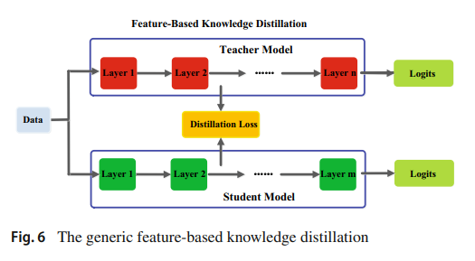

Knowledge Distillation review - Knowledge
- Knowledge Distillation에 대해 정리한 survey논문 리뷰
- Knowledge Distillation model (KD model)의 목적을 간략히 설명하면 large scale model(teacher model)을 KD model을 통해 small scale model(student model)로 압축(compression)하여 파라미터를 최적화 시키는 것
- 이번 페이지에서는 large sclae model의 Knowledge를 small scale model에게 옮길 때 어떠한 형태(form)로 모델의 knowledge를 추출한 후 옮기는지에 대해 설명할 것
Knowledge
Response-Based Knowledge

main idea 해당 모델은 large scale model의 last ouput layer를 사용하여 small scale model이 이를 모방(mimic)하게 하는 것
Loss Fuction
Distillation Loss for soft logits
\(L_{ResD} (p(z_{t}, T), p(z{s}, T)) = L_{R} (p(z_{t}, T), p(z_{S}, T))\)
\(where\) \(p(z_{i}, T)\) = Softmax(T = t)= Soft Target =\(\frac{e^{a/T}}{e^{a/T} + e^{b/T} + e^{c/T}}\)
이를 정리하면 Kullback-Leibler Divergence Loss( \(L_{R}\) )를 따르므로 Student, Teacher model의 Output인 Soft Target의 분포를 비교하는 것을 의미Student Loss 는 small scale model의 output을 정답(label)과 매치시켜 학습을 진행
\(L_{CE}(y, p(z_{s}, T = 1))\)
\(where\) Softmax(T = 1) = \(\frac{e^{a}}{e^{a} + e^{b} + e^{c}}\)Total Loss 는 아래와 같이 Distillation Loss와 Student Loss에 적절한 가중치를 주어 산출
\(L = \sum L_{KD}(S(x,\theta _{S}, T ), T(x, \theta _{T}, T)) T^2 \alpha+ L_{CE}(\hat y_{S}, y)(1-\alpha)\)
- Temperture가 커진다면 Model이 학습할때 Distillation Loss를 줄이는 방향으로 학습을 하고 prediction 값은 더욱더 Soft하게 됨
- \(\alpha\) 가 커진다면 Model이 학습할 때 Distillation Loss를 줄이는 방향으로 학습을 하게 됨
- Temperture가 커진다면 Model이 학습할때 Distillation Loss를 줄이는 방향으로 학습을 하고 prediction 값은 더욱더 Soft하게 됨
이를 코드로 작성한다면 아래와 같다.
def Total_Loss_fn(student_pred, teacher_pred, alpha, T):
loss = F.kl_div(F.log_softmax(student_pred / T, dim=1), F.softmax(teacher_pred / T, dim=1), reduction='batchmean') * (T ** 2) * alpha + F.cross_entropy(student_pred, y) * (1 - alpha)
return lossFeature-Based Knowledge

main idea feature activation을 직접적으로 매치시켜서 각 layer를 유사하도록 학습을 진행
Feature-Based Knowledge는 얇고 깊은 network에 적합함
일반적인 Loss Function
- Distillation Loss for feature-based knowledge transfer
\(L_{FeaD}(f_{t}(x), f_{s}(x))\) = \(L_{F}(\phi_{t}(f_{t}(x)), \phi_{t}(f_{t}(x)))\)
\(where\) \(\phi\) 는 image shape을 바꿔주는 function,
\(f_{t}(x), f_{s}(x)\)는 중간 층(intermediate layers)의 activation map을 의미,
\(L_{F}()\) 는 feature map간의 유사도를 확인해주는 function
이를 정리하면 상황에 따라 \(f_{t}()\)가 attention map, Feature map이 될 수 는 있지만 궁극적으로는 Teacher Model의 layer와 Student Model의 layer를 매치시켜 최대한 유사하도록 학습을 진행
※ Teacher Model의 hint layer와 Student Model의 guided layer를 어떻게 효율적으로 선택해야 하는지는 지속적인 연구가 필요
Relation-Based Knowledge
main idea 다른 층 간의 상관관계 혹은 데이터 샘플간의 상관관계를 탐색하여 이를 바탕으로 학습을 진행
example)
1. feature map간의 데이터 상관관계를 탐색하고 Student model은 이를 사용해 상호간의 정보 흐름을 모방하며 학습
2. 각기 다른 Teacher Model의 상관관계와 중요도를 2개의 그래프로 표현하는데 이는 logits과 feature를 사용함
Loss Function
Distillation Loss of relation-based knowledge based on the relations of feature maps
\(L_{RelD}(f_{t}, f_{s})\) = \(L_{R^1}(\psi_{t}(\hat f_{t}, \check f_{t}), \psi_{t}(\hat f_{s}, \check f_{s}))\)
\(where\) \(\hat f_{t,s}, \check f_{t,s}\) 는 Teacher, Student Model로부터 선택된 feature map 쌍,
\(\psi ()\) 는 feature map 간의 유사도를 확인해주는 function,
\(L_{R^1}()\) 는 Teacher, Student feature map간의 상관관계를 확인해주는 functionDistillation Loss of relation-based knowledge based on the relations of instance relationship
\(L_{RelD}(f_{t}, f_{s})\) = \(L_{R^2}(\psi_{t}(t_{i}, t_{j}), \psi_{t}(s_{i}, s_{j}))\)
\(where\) \((t_{i},t_{j}) \in F_{t}, (s_{i},s_{j}) \in F_{s}\)
\(F_{t,s}\) 는 Teacher, Student Model로부터의 sets of feature representation,
\(\psi ()\) 는 feature representation 간의 유사도를 확인해주는 function,
\(L_{R^2}()\) 는 Teacher, Student feature map간의 상관관계를 확인해주는 function